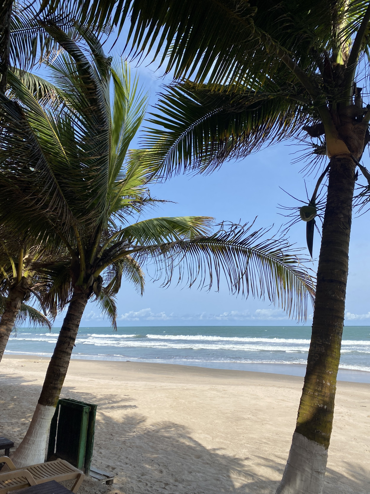

Beaches & Coast
Relax on the golden sands of the Atlantic coast, watch local fishermen at work and enjoy fresh seafood by the sea.
- Busua Beach for surfing and relaxing
- Kokrobite Beach for music and nightlife
- Labadi Beach in Accra for a quick escape